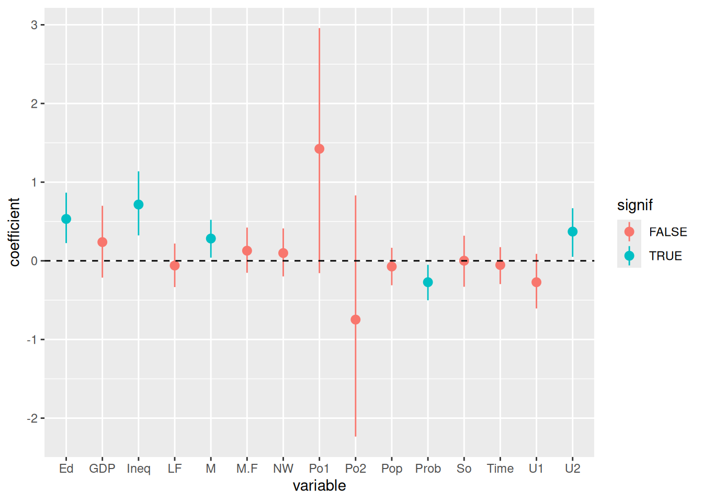

swim = read.table('Exercises/swim.dat')Chapter 9: Linear regression
Exercises
9.1
To specify our prior, we let the prior expectation of our \(y\)-intercept to be 23, and we let the prior expectation of the effect of training week by week to be 0, so \(\boldsymbol{\beta} = (23, 0)^T\).
We expect no covariance with the \(\beta\) coefficients, but we do have uncertainty about our initial \(\beta\) estimates. Specifically, to let 95% of our uncertainty of the \(y\)-intercept to fall in \([22, 24]\), we let \(\Sigma_{0(1, 1)} = 1/4\) (so that \(\pm\) 2 standard deviations is \(\pm\) 1). We also expect that training has a relatively mild effect on time, so we let \(\Sigma_{0(2, 2)} = 0.1\) which is just an arbitrarily chosen small variance.
For our expectation of the variability of measurements, let’s similarly set \(\sigma^2_0 = 1/4\) and only lightly center this prior with \(\nu_0 = 1\).
library(MASS) # mvrnorm
library(dplyr)
S = 5000
X = cbind(rep(1, 6), seq(1, 11, by = 2))
n = dim(X)[1]
p = dim(X)[2]
# Prior
beta0 = c(23, 0)
sigma0 = rbind(c(0.25, 0), c(0, 0.1))
nu0 = 1
s20 = 0.25
set.seed(1)
inv = solve
# For each swimmer, run linear regression gibbs sampling and obtain a posterior
# predictive distribution
swim_pred = apply(swim, MARGIN = 1, function(y) {
# Store samples
BETA = matrix(nrow = S, ncol = length(beta0))
SIGMA = numeric(S)
# Starting values - just use prior values?
beta = c(23, 0)
s2 = 0.7^2
# Gibbs sampling algorithm from 9.2.1
for (s in 1:S) {
# 1a) Compute V and m
V = inv(inv(sigma0) + (t(X) %*% X) / s2)
m = V %*% (inv(sigma0) %*% beta0 + (t(X) %*% y) / s2)
# 1b) sample beta
beta = mvrnorm(1, m, V)
# 2a) Compute SSR(beta) (specific formula from 9.1)
ssr = (t(y) %*% y) - (2 * t(beta) %*% t(X) %*% y) + (t(beta) %*% t(X) %*% X %*% beta)
# 2b) sample s2
s2 = 1 / rgamma(1, (nu0 + n) / 2, (nu0 * s20 + ssr) / 2)
BETA[s, ] = beta
SIGMA[s] = s2
}
# Now sample posterior predictive - two weeks later
xpred = c(1, 13)
YPRED = rnorm(S, BETA %*% xpred, sqrt(SIGMA))
YPRED
})b
fastest_times = apply(swim_pred, MARGIN = 1, FUN = which.min)
table(fastest_times) / length(fastest_times)fastest_times
1 2 3 4
0.6524 0.0134 0.3060 0.0282 We notice that with our posterior predictive dataset, swimmer 1 is the fastest about 65% of the time by week 13, so we recommend that swimmer 1 race.
9.3
crime = read.table('Exercises/crime.dat', header = TRUE)a
y = crime$y
X = crime %>% select(-y) %>% as.matrix
n = dim(X)[1]
p = dim(X)[2]
g = n
nu0 = 2
s20 = 1
S = 1000
Hg = (g / (g + 1)) * X %*% inv(t(X) %*% X) %*% t(X)
SSRg = t(y) %*% (diag(1, nrow = n) - Hg) %*% y
s2 = 1 / rgamma(S, (nu0 + n) / 2, (nu0 * s20 + SSRg) / 2)
Vb = g * inv(t(X) %*% X) / (g + 1)
Eb = Vb %*% t(X) %*% y
E = matrix(rnorm(S * p, 0, sqrt(s2)), S, p)
beta = t(t(E %*% chol(Vb)) + c(Eb))library(tidyr)
signif = apply(beta, MARGIN = 2, FUN = quantile, probs = c(0.025, 0.5, 0.975)) %>%
apply(MARGIN = 2, FUN = function(y) !(y[1] < 0 && 0 < y[3]))
beta_df = as.data.frame(beta) %>%
gather(key = 'variable', val = 'coefficient') %>%
mutate(signif = signif[variable])
ggplot(beta_df, aes(x = variable, y = coefficient, color = signif)) +
stat_summary(fun.y = mean, fun.ymin = function(y) quantile(y, probs = c(0.025)), fun.ymax = function(y) quantile(y, probs = c(0.975))) +
geom_hline(yintercept = 0, lty = 2)Warning: The `fun.y` argument of `stat_summary()` is deprecated as of ggplot2 3.3.0.
ℹ Please use the `fun` argument instead.Warning: The `fun.ymin` argument of `stat_summary()` is deprecated as of ggplot2 3.3.0.
ℹ Please use the `fun.min` argument instead.Warning: The `fun.ymax` argument of `stat_summary()` is deprecated as of ggplot2 3.3.0.
ℹ Please use the `fun.max` argument instead.
Looks like Ed (mean years of schooling), Ineq (Income inequality), M (percentage of males aged 14-24), Prob (probability of imprisonment), and U2 (unemployment rate of urban males 35-39).
b
y = crime$y
X = crime %>% select(-y) %>% as.matrix
set.seed(1) # Reproducible!
train_i = sample.int(length(y), size = round(length(y) / 2), replace = FALSE)
ytr = y[train_i]
Xtr = X[train_i, ]
yte = y[-train_i]
Xte = X[-train_i, ]i
# From 9.1
beta_ols = inv(t(Xtr) %*% Xtr) %*% t(Xtr) %*% ytr
beta_ols [,1]
M 0.19419790
So 0.20624856
Ed 0.64334998
Po1 0.30590821
Po2 0.44725441
LF -0.09198965
M.F 0.03537926
Pop 0.08440462
NW -0.01227990
U1 -0.03278782
U2 0.15494093
GDP 0.10455812
Ineq 0.76691166
Prob -0.25823362
Time 0.05938070y_ols = Xte %*% beta_ols
ols_df = data.frame(
observed = yte,
predicted = y_ols
)
ggplot(ols_df, aes(x = observed, y = predicted)) +
geom_point() +
geom_smooth(method = 'lm')
pred_error = sum((yte - y_ols)^2) / length(yte)
pred_error[1] 0.4880959ii
y = ytr
X = Xtr
n = dim(X)[1]
p = dim(X)[2]
g = n
nu0 = 2
s20 = 1
S = 1000
Hg = (g / (g + 1)) * X %*% inv(t(X) %*% X) %*% t(X)
SSRg = t(y) %*% (diag(1, nrow = n) - Hg) %*% y
s2 = 1 / rgamma(S, (nu0 + n) / 2, (nu0 * s20 + SSRg) / 2)
Vb = g * inv(t(X) %*% X) / (g + 1)
Eb = Vb %*% t(X) %*% y
E = matrix(rnorm(S * p, 0, sqrt(s2)), S, p)
beta = t(t(E %*% chol(Vb)) + c(Eb))
beta_bayes = as.matrix(colMeans(beta))
y_bayes = Xte %*% beta_bayes
bayes_df = data.frame(
observed = yte,
predicted = y_bayes
)
ggplot(ols_df, aes(x = observed, y = predicted)) +
geom_point() +
geom_smooth(method = 'lm')
pred_error = sum((yte - y_bayes)^2) / length(yte)
pred_error[1] 0.4910634At least when the seed is 1, there doesn’t appear to be a major difference between the prediction errors.
c
# Unnecessary code repeating here. Clean this up later w/ functions
N = 100
set.seed(1)
pred_errors = t(sapply(1:N, function(i) {
y = crime$y
X = crime %>% select(-y) %>% as.matrix
train_i = sample.int(length(y), size = round(length(y) / 2), replace = FALSE)
ytr = y[train_i]
Xtr = X[train_i, ]
yte = y[-train_i]
Xte = X[-train_i, ]
# OLS
beta_ols = inv(t(Xtr) %*% Xtr) %*% t(Xtr) %*% ytr
beta_ols
y_ols = Xte %*% beta_ols
pred_error_ols = sum((yte - y_ols)^2) / length(yte)
# Bayes
y = ytr
X = Xtr
n = dim(X)[1]
p = dim(X)[2]
g = n
nu0 = 2
s20 = 1
S = 1000
Hg = (g / (g + 1)) * X %*% inv(t(X) %*% X) %*% t(X)
SSRg = t(y) %*% (diag(1, nrow = n) - Hg) %*% y
s2 = 1 / rgamma(S, (nu0 + n) / 2, (nu0 * s20 + SSRg) / 2)
Vb = g * inv(t(X) %*% X) / (g + 1)
Eb = Vb %*% t(X) %*% y
E = matrix(rnorm(S * p, 0, sqrt(s2)), S, p)
beta = t(t(E %*% chol(Vb)) + c(Eb))
beta_bayes = as.matrix(colMeans(beta))
y_bayes = Xte %*% beta_bayes
pred_error_bayes = sum((yte - y_bayes)^2) / length(yte)
c(pred_error_ols, pred_error_bayes)
})) %>% as.data.frame
colnames(pred_errors) = c('ols', 'bayes')Here’s a plot of the density of \(\text{err}_{\text{Bayes}} - \text{err}_{\text{ols}}\). If this is less than 0, then the Bayes estimator did better than the OLS estimator:
pred_diff = pred_errors %>% transmute(`bayes - ols` = bayes - ols)
ggplot(pred_diff, aes(x = `bayes - ols`)) +
geom_density() +
geom_vline(xintercept = 0, lty = 2)
Lastly,
mean(pred_errors$bayes < pred_errors$ols)[1] 0.96For N samples, 96% of the time, the predictive error using the Bayes estimators is less than the predictive error using the OLS estimators. Nice!